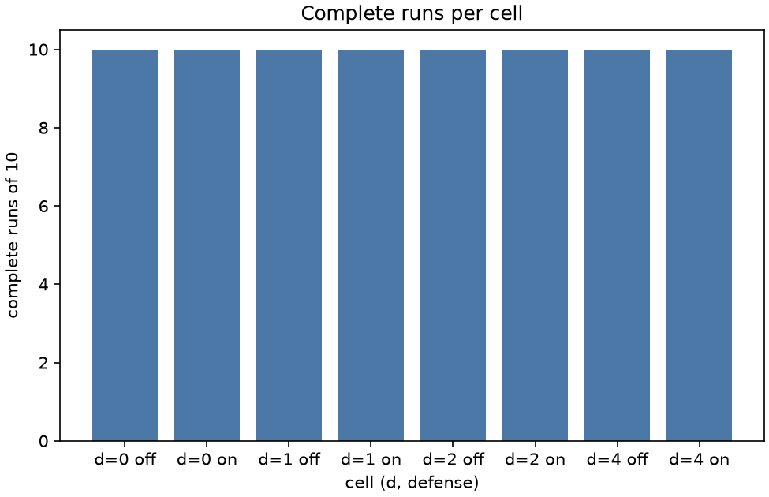

Stage report, step 3 of 6. Back to summary
| What | make_sweep.py --sweep --run: d 0, 1, 2, 4 x defense off, on x seeds 1 to 10, one core. |
|---|---|
| Why | Goal G1 needs 80 logged runs with food collected and wasted robot-seconds. |
| Input data | Frozen values from tuning_pick.json and defense_pick.json. |
| Output data | 80 run folders under runs/sweep/. |
| Result (numbers) | 80 of 80 cells have a complete run. |
| Result (good or bad) | Good: all cells complete. |
| Status | ran |
Figure and table

| d | defense | complete runs |
|---|---|---|
| 0 | off | 10 of 10 |
| 0 | on | 10 of 10 |
| 1 | off | 10 of 10 |
| 1 | on | 10 of 10 |
| 2 | off | 10 of 10 |
| 2 | on | 10 of 10 |
| 4 | off | 10 of 10 |
| 4 | on | 10 of 10 |